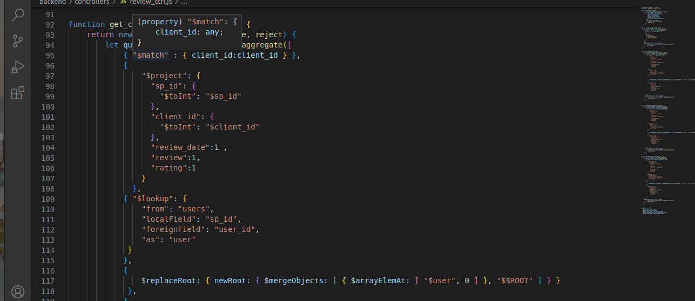

Client data model for holding the attributes of sign up
backend/models/users_mdls.js(var usersSchema=new Schema)

Client data model for holding the attributes of sign up
backend/models/users_mdls.js(var usersSchema=new Schema)
Client Authentication to check if the user has entered a valid username and password for login.
Client data models for holding the client attributes of login
backend/models/users_mdls.js(var usersSchema=new Schema)
Client data model for holding the attributes of the client profile setup
backend/models/users_mdls.jsVar UsersSchema = new Schema)
Client data model for holding the attributes of resetting the password
backend/services/users_srv.js Async function reset_password)

Send email for verifying client reset password.
backend/interfaces/email.js(const sendEmail=async(to,subject,content,attachment)
Data models for holding the attributes of the different services
backend/models/services_mdls.js(Var ServicesSchema )

Data model for holding the attributes of the service category
backend/models/service_category_mdls.js(var ServiceCategorySchema = new Schema)

Data models for holding the attributes of the service sub-category
backend/models/service_sub_category_mdls.js(var ServiceSubCategorySchema)
Data model for holding the attributes of the service provider.
backend/models/service_provider_mdls.js(var ServiceProviderSchema = new Schema)

data model for holding the data of the client review
backend/models/reviews_mdls.js(var ReviewSchema = new Schema)

Data model for getting the client review
backend/controllers/review_ctrl.js(var ReviewSchema = new Schema)

Data model for holding the terms and condition attributes
backend/models/terms_condition_mdls.js(Var TncSchema=new Schema)